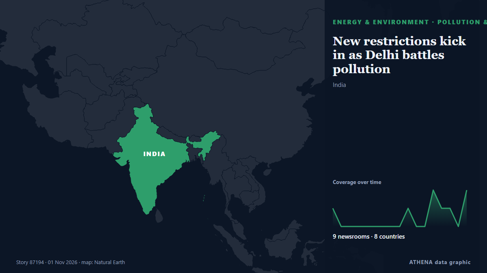

Umwelt und Artenvielfalt
| 20. Okt. | 0 |
|---|---|
| 21. Okt. | 0 |
| 22. Okt. | 0 |
| 23. Okt. | 0 |
| 24. Okt. | 0 |
| 25. Okt. | 0 |
| 26. Okt. | 0 |
| 27. Okt. | 1 |
| 28. Okt. | 1 |
| 29. Okt. | 1 |
| 30. Okt. | 11 |
| 31. Okt. | 3 |
| 1. Nov. | 2 |
| 2. Nov. | 0 |
Schlagzeilen werden auf Englisch angezeigt, wie veröffentlicht.

New restrictions kick in as Delhi battles pollution
Authorities in New Delhi stepped up anti-pollution measures on Sunday, including higher parking fees and work-from-home orders, seeking to curb toxic smog in one of the world's mo... von Oman Observer
For M’sian runners, Jakarta is as much about friendship as the finish line
Members of the Haze Runners Club recently travelled to the Indonesian capital for a weekend filled with big crowds and a very different running atmosphere. von Free Malaysia Today
Slovenia presses ahead with Mokrice dam project
Slovenia's government has decided that the energy benefits of a planned hydropower plant on the Sava River in south Slovenia outweigh the public interest in nature conservation, clearing a key hurdle… von Slovenia Times (alternative feed)
Iran ready to join three initiatives at COP17 on biodiversity conservation
Tehran, IRNA – Iran has expressed readiness to join three initiatives launched at the proposal of the presidency of the 17th Conference of the Parties to the Convention on Biological Diversity (CBD… von IRNA (English)
COP17 | Jiangsu Showcases Biodiversity Conservation in Action
Media OutReach Newswire – 29 October 2026 – Jiangsu Day, a themed event at the China Pavilion during the 17th meeting of the Conference of the Parties to the Convention on Biological Diversity… von Laotian Times
UAE brings oil tanker leak under control, coastal cleanup continues
DUBAI: The UAE has brought an oil tanker leak under control, with no new leakage detected, as environmental cleanup operations continued along coastlines affected by the spill, the Emirates News… von Arab News
Infected hay bales to be buried in a safe location
Hay bales contaminated with the food and mouth virus (FMD) that were intended to be buried in Troulli will be moved to another safe location so as not to affect livestock units in the adjacent areas… von Cyprus Mail
Damen signs deal with Lithuanian Navy for SAR vessel
Damen Shipyards Group has signed a contract to build a pollution incident response and search and rescue (SAR) vessel for the Lithuanian Navy.... von Naval Today
For many, striped bass fishing is a way of life. But the iconic species could face collapse
Striped bass fishing has been Bill Jakob's passion for more than 60 years, and he remembers an era when he'd spend all night casting his line into the crashing waves off Montauk and get eight or nine… von Phys.org
India’s animal centre vows reset after criticism
JAMNAGAR: Behind guarded gates resembling a maharajah’s palace are hundreds of elephants and big cats, giraffes grazing in a mock savannah, and chimpanzees and orangutans swinging from ropes. von Dawn
King's Counsel, 6 firms selected for haze probe panel, more may be added if necessary: MinLaw, NEA
The specialist panel will probe companies that may be responsible for, or have contributed to, the fires causing haze in Singapore. von CNA (Channel NewsAsia)
Charity crowdfunds millions to buy historic English estate
After a two-year campaign, the Wildlife Trusts acquired the entire 3,800-hectare Rothbury Estate in northern Northumberland, marking England’s largest land acquisition in three decades. von Free Malaysia Today
Greener front gardens could help combat air pollution and summer heat
Scientists call for incentives to preserve vegetation as study highlights benefits of plentiful planting in London Your front garden could be a first line of defence against air pollution, according… von Guardian Environment
Yemeni army investigating reports of Houthi use of toxic gases in Taiz
Military says civilians and resistance fighters suffered suspected poisoning and suffocation after alleged use of toxic substances in projectiles. von Anadolu Agency (English)